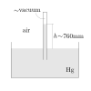

16.2. Esperienze ed esperimenti#
16.2.1. Esperienza di Torricelli#
Torricelli (1608-1647) dimostra che1
«viviamo sul fondo di un oceano d’aria, la quale […] si sa che pesa, e tanto»
In particolare, l’esperienza di Torricelli permette di misurare il peso dell’aria nell’atmosfera ed esprimerlo in termini di pressione atmosferica.
Torricelli immerge completamente un tubo di vetro in un bagno di mercurio, \(\text{Hg}\), riempiendolo completamente. Successivamente, gira con l’estremità chiusa verso l’alto e osserva che nel tubo rimane mercurio fino a un’altezza di circa \(h \sim 760 \text{mm}\) sopra il pelo libero del mercurio nel contenitore. Il mercurio non esce completamente dal tubo, poiché la superficie libera del mercurio nella bacinella è soggetta alla pressione atmosferica, \(P_{atm}\), dell’ambiente nel quale viene svolto l’esperimento. Nella parte superiore del tubo si forma una condizione di «quasi»-vuoto (todo discussa sotto), con pressione \(P_0 \ll P_{atm}\). La legge di Stevino (1548-1620), permette di mettere in relazione la pressione in due punti all’interno dello stesso fluido in quiete,
trascurando la pressione \(P_0\) rispetto a \(P_{atm}\), e usando il valore \(\rho_{\text{Hg}} = 13580 \, \frac{\text{kg}}{\text{m}^3}\) per la densità del mercurio liquido, si ottiene una misura della pressione ambiente espressa con il SI di misure attualmente in uso,
in buon accordo con le misure attuali della stazione meteorologica di dell’Osservatorio Ximeniano, stazione metereologica di riferimento per il centro della città di Firenze, città dove Torricelli lavrò presso i Medici durante gli ultimi anni della sua vita: la pressione media annua è di circa \(10080 \, \text{Pa}\) presso l’Osservatorio che si trova a \(75 \, \text{m} \ \text{s.l.m}.\)
La misura è stata espressa usando il Pascal, \(\text{Pa}\), come unità di misura derivata per la pressione nel SI. Con questa esperienza, Torricelli aveva costruito uno strumento per la misura della pressione atmosferica: non essendo ancora affermato il SI di misura, Torricelli usava l’altezza della colonnina dello strumento così costruito come misura della pressione. Attualmente, la conversione tra le due misure di pressione è
L’esperienza di Torricelli:
introduce il concetto di pressione atmosferica e nei gas in generale, come forza per unità di superficie che un gas esercita sulle pareti di un contenitore, o di una superficie esposta al gas;
introduce il manometro di Torricelli come strumento per la misura della pressione atmosferica e nei gas in generale;
è una delle prime esperienze dell’esistenza del vuoto, in contrasto con l”horror vacui aristotelico, principio secondo il quale la natura rifugge il vuoto, riempiendolo costantemente
Il «quasi»-vuoto
Nella parte superiore del tubo c’è vapore di mercurio, in equilibrio con la superficie libera del mercurio all’interno del tubo. A una temperatura data, la pressione che identifica la condizione di equilibrio tra le due fasi - il numero di molecole per unità di tempo di \(\text{Hg}\) che passano dalla fase liquida al vapore è uguale al numero delle molecole per unità di tempo che passano dal vapore alla fase liquida - è definita pressione di vapore, \(p_v\). La pressione di vapore per \(\text{Hg}\) a temperatura ambiente è circa \(p_{v, \text{Hg}}(T=20 \, \text{°C}) = 0.1727 \, \text{Pa}\), dell’ordine di \(10^{-6}\) - un millionesimo - della pressione atmosferica. Dal confronto di questi valori, segue la semplificazione della pressione \(P_0\) nella legge di Stevino, e l’approssimazione di vuoto all’interno del tubo almeno per quanto riguarda gli effetti meccanici sulla colonnina di mercurio.
Sensibilità della misura alle condizioni metereologiche e alla quota
todo …
 |
16.2.2. Prime esperienze sui gas - esperimento di Boyle#
L’indagine di Boyle e Hooke su gas sufficientemente rarefatti produce come risultato la legge di Boyle,
valida per un sistema chiuso a temperatura \(T\) costante. Al tempo delle attività sperimentali di Boyle, il manometro di Torricelli era uno strumento disponibile per una misura sufficientemente accurata della pressione, mentre non erano ancora disponibili strumenti accurati per la misura della temperatura del gas contenuto all’interno del sistema. Le attività di Boyle assumevano quindi una stabilità sufficiente della temperatura dell’ambiente all’interno dela quale era svolto l’esperimento, insieme all’equilibrio termico tra sistema e ambiente.
L’esperimento avviene in un tubo a forma di \(\text{U}\) con un’estremità chiusa. Un liquido di densità nota \(\rho\) viene usato per isolare il gas oggetto di studio dall’ambiente esterno, a pressione ambiente. Il materiale del tubo è un buon conduttore così che si può immaginare che per variazioni lente della configurazione, la temperatura è uguale temperatura dell’ambiente in cui si svolge l’esperimento, considerabile costante con buona approssimazione. L’esperimento si svolge aggiungendo liquido dall’estremità aperta del tubo. Usando la legge di Stevino, si può stimare/misurare la pressione del gas misurando la differenza di quota del liquido nelle due colonnine,
La misura del volume \(V_{gas}\) occupato dal gas è immediata. Lo svolgimento dell’esperimento per diversi gas mostra una dipendenza inversamente proporzionale tra le misure \(P_{gas,k}\), \(V_{gas,k}\).
todo aggiungere tabella e/o grafico, per uno o più gas
Usando il mercurio come liquido, \(\text{Hg}\), e partendo da una condizione di riferimento a pressione ambiente in cui il volume occupato dal gas è \(V_0\), si osserva che a una differenza della quota delle colonnine \(\Delta h = n \cdot 760 \, \text{mm}\) corrisponde un volume \(\frac{V}{1+n}\).
Exercise 16.1
16.2.3. Dilatazione sostanze#
Con le esperienze discusse fino ad ora non è ancora possibile associare nessuna grandezza fisica alla percezione comune di caldo o freddo. Confusione temperatura-calore todo ref
E” però possibile osservare la variazione delle dimensioni di sistemi formati da sostanze diverse, in occasione della variazione di questa percezione. In particolare, si prendono \(N\) oggetti di sostanze diverse e si valuta la variazione delle loro dimensioni tra condizioni diverse, associabili qualitativamente alla percezione di caldo-freddo, ed etichettate con l’indice \(t\). Si valuta quindi la variazione della dimensione lineare \(L_i\) dell’oggetto \(i\) nella condizione identificata dall’indice \(t\), rispetto alla condnizione di riferimento identificata dall’indice \(0\). Per la maggioranza delle sostanze, confrontando due sostanze \(i\), \(k\) si osserva che
Questa osservazione permette quindi di introdurre per ogni sostanza \(i\) una relazione lineare tra la variazione relativa delle sue dimensioni lineari rispetto alle dimensioni di riferimento \(\frac{\Delta L_{i, 0t}}{L_{i,0}}\) e la variazione di una grandezza fisica \(T\), il cui valore \(T_t\) descrive la condizione \(t\) comune a tutti i sistemi oggetto di indagine e associata alla percezione di caldo-freddo del sistema,
Questo procedimento consente quindi di introdurre i concetti e le relative grandezze fisiche per il coefficiente di dilatazione termica \(\alpha_i\) dei materiali, qui ipotizzato costante nell’intervallo di condizioni analizzate, e la temperatura \(T\). Queste due grandezze fisiche sono qui definite a meno di due valori, una temperatura di riferimento e un’unità di misura. todo dire due parole, e collegare con le scale di temperatura
todo costruzione termometro; equilibrio termico
todo dilatazione lineare, volumetrica; collegamento con qualche paragrafo?
Nota
Perché la relazione è lineare? La relazione non è lineare in generale, ma lo è per un gran numero di sostanze in un intervallo moderato di condizioni. Questo è spiegabile tramite l’espansione in serie di Taylor di una funzione: se si considera un intervallo sufficientemente piccolo rispetto alla rapidità di variazione di una funzione attorno alla condizione di riferimento considerata, l’approssimazione lineare è una buona approssimazione della funzione nell’intervallo considerato,
Possiamo quindi interpretare l’esperienza riguardo alla dilatazione lineare delle sostanze in funzione della temperatura, considerando che la nostra esperienza quotidiana avviene in un intervallo limitato di condizioni rispetto a quelle disponibili in natura: limitandoci all’intervallo di temperatura anche se non sono ancora state introdotte le scale di temperatura, ma supponendo di avere una minima familiarità almeno con la scala centigrada Celsius, tanto da sapere che la temperatura del corpo umano è circa \(36\text{°C}\), l’acqua bolle attorno ai \(100\text{°C}\) e ghiaccia attorno agli \(0\text{°C}\), limitandoci all’intervallo di temperatura, gran parte delle nostre esperienze nella vita quotidiana si svolge in un intervallo tra i \(-20\text{°C}\) del frigorifero di casa ai \(100\text{°C}\) dell’acqua che bolle in pentola; la temperatura minima raggiungibile è \(-273.15\text{°C}\), la temperatura di un metallo fuso è dell’ordine di \(1000\text{°C}\), i corpi celesti possono raggiungere temperature dell’ordine dei \(10^4-10^{12}\text{°C}\).
16.2.4. Scale di temperatura#
Scale di temperatura empiriche. Le esperienze sulla dilatazione dei corpi conducono alla definizione delle scale empiriche di temperatura: assunta la linearità del fenomeno, una scala di temperatura viene definita da due condizioni facilmente replicabili in laboratorio per la costruzione/taratura degli strumenti, e che permettono di determinare una temperatura di riferimento da usare come origine e un’unità di misura che determini l’ampiezza del grado della scala di temperatura.
Scala termodinamica della temperatura assoluta. Mentre le scale di temperatura empiriche vengono sviluppate nella prima metà del XVIII secolo, nel XIX secolo un’approfondita comprensione della materia permette di definire una scala termodinamica per la temperatura assoluta come una grandezza fisica e manifestazione macrsocopica dello stato «di agitazione» a livello microscopico dei componenti elementari della materia.
spostare termodinamica e teoria atomica all’inizio dell’introduzione, \(\sim\) Feynman?
16.2.4.1. Scale empiriche#
Una scala empirica di temperatura viene definita usando due condizioni facilmente replicabili in laboratorio per definire l’origine della scala e l’ampiezza del grado. Così, nella prima metà del XVIII secolo vennero definite alcune scale di temperatura. Le definizioni originali subirono spesso modifiche in seguito a cambi di scelte delle condizioni di riferimento, producendo come risultato delle scale con origine e ampiezza del grado diversa formule di conversione
1702, Romer. La definizione originale usava:
estremo inferiore, \(0 \, \text{°Ro}\): temperatura eutettica del cloruro di ammonio, temperatura caratteristica di una sostanza molto comune nei laboratori dell’epoca;
estremo superiore, \(60 \, \text{°Ro}\): temperatura di ebollizione dell’acqua a pressione ambiente
L’originale suddivisione in \(60\) intervalli fu probabilmente dettata dall’elevato numero di divisori interi di \(60\). Successivamente la definizione della scala fu modificata per evitare di usare il cloruro di ammonio, rendere più facile la taratura dello strumento, e per uniformarsi alle scelte fatte da altri, accortosi che la solidificazione dell’acqua avveniva circa a \(7.5 \, \text{°Ro}\) si decise di usare questa condizione per definire l’estremo inferiore: l’estremo inferiore della scala Romer, \(7.5 \, \text{°Ro}\), corrisponde alla solidificazione dell’acqua a pressione ambiente.
1709-15, Fahrenheit. Dopo aver fatto visita a Romer, si dedicò alla progettazione e alla realizzazione di strumenti di misura di pressione e temperatura. La definizione originale della scala usava:
estremo inferiore, \(0 \, \text{°F}\): temperatura eutettica del cloruro di ammonio; le malelingue sostengono la temperatura più bassa registrata negli inverni di Danzica, città allora prussiana in cui viveva mentre metteva a punto gli strumenti
estremo superiore, \(96 \, \text{°F}\): temperatura media del corpo umano
Le scelte rocambolesche e definite in maniera imprecisa non costituivano delle condizioni facilmente replicabili per la costruzione e/o taratura di nuovi strumenti. Vennero scelte quindi le condizioni di solidificazione, \(32 \, \text{°F}\), e di evaporazione, \(212 \, \text{°F}\), dell’acqua a pressione ambiente al livello del mare, in modo tale da suddividere tale intervallo in \(180\) sotto-intervalli (in analogia con la scelta di \(60\), per avere un numero elevato di divisori interi).
1731, de Réaumur. La definizione usa:
estremo inferiore, \(0 \, \text{°Re}\): temperatura di solidificazione dell’acqua a pressione ambiente
estremo superiore, \(80 \, \text{°Re}\): temperatura di ebollizione dell’acqua a temperatura ambiente. Perché 80 intervalli tra queste due condizioni? Perché il termometro costruito da Reaumur usava come principio fisico la dilatazione termica dell’etanolo, e il volume dell’etanolo varia dell’8% tra le due condizioni di riferimento scelte.
1742, Celsius. E” la scala di temperatura empirica usata attualmente in tutto il mondo, ad eccezione degli Stati Uniti, la Liberia e le Isole Cayman che usano la scala Fahrenheit. Poteva forse la definizione originale coincidere con quella usata attualmente? Ovviamente no. La definizione originale di Celsius era invertita rispetto a quella attuale, e a tutte le scale usate allora (perché? Perché no, si potrebbe rispondere. Fatevi voi la vostra scala di temperatura!), ed usava:
estremo inferiore, \(0 \, \text{°C}\): temperatura di evaporazione dell’acqua a pressione ambiente
estremo superiore, \(100 \, \text{°C}\): temperatura di solidificazione dell’acqua a pressione ambiente.
Per rendere più pratica la misura e adeguarsi al verso delle altre scale, un anno dopo la morte di Celsius, la scala fu invertita da Linneo (lo stesso Linneo, biologo, che si dilettava con la classificazione di piante e animali, padre della classificazione scientifica degli organismi viventi, usata tuttora).
16.2.4.2. Scala termodinamica#
Scala di temperatura assoluta
Esperimenti sui gas, estrapolando i dati sperimentali delle leggi di Charles e di Gay-Lussac
1848, Kelvin On an Absolute Thermometric Scale
Nota
Evaporazione ed ebollizione dell’acqua in funzione della pressione. Quanto cambia in funzione della pressione?
Example 16.1 (Anello di Gravesande)
L’anello di Gravesande è un esperimento di fisica ideato dal fisico olandese W.Gravesande nel XVIII secolo per illustrare la dilatazione termica dei materiali, osservando il passaggio di una sfera di metallo attraverso un anello.
La dilatazione termica di un solido può essere descritta con i coefficienti di dilatazione.
Example 16.2 (Giunzione binari e ponti)
Example 16.3 (Pendolo)
Example 16.4 (Calettamento)
16.2.5. Equilibrio termico#
todo Qui? Prima?
16.2.6. Teoria cinetica dei gas#
Nel 1738, D.Bernoulli pubblica la sua Hydrodynamica dove discute il moto dei fluidi e presenta un modello atomistico per la dinamica microscopica delle molecole di un gas, che costituisce uno dei primi contributi allo sviluppo della teoria cinetica dei gas e alla meccanica statistica, fornendo un legame tra la dinamica microscopica delle molecole del gas e le grandezze fisiche tipiche di una descrizione macroscopica del sistema, pressione e temperatura todo anche la temperatura?
dettagli
16.2.7. Calorimetria: calore latente e calore specifico#
Gli studi di J.Black (1728-1799) attorno alla metà del XVIII secolo sul raggiungimento dell’equilibrio termico e sulle transizione di fase aiutano a distinguere i concetti di temperatura e di calore, sui quali c’era ancora confusione e nessuna teoria affermata soddisfacente.
Gli studi sul raggiungimento dell’equilibrio termico di due sistemi sui quali non è compiuto lavoro, permisero a J.Black di osservare che:
per due sistemi composti dalla stessa sostanza, la variazione di temperatura è inversamente proporzionale alle loro masse;
per sistemi composti da sostanze diverse, la variazione di temperatura dipende dalle condizioni in cui avviene l’esperimento (es. pressione costante, volume costante,…) e da una proprietà del materiale definita poi calore specifico, \(c_x\)
e di trarre delle conclusioni che, usando i termini moderni, possono essere espresse come:
due corpi posti a contatto con temperatura iniziale diversa, raggiungono una temperatura di equilibrio che dipende dalle loro temperature iniziali, dalla loro massa, e dalla loro sostanza;
la temperatura \(T\) misurata è una grandezza fisica legata a una grandezza fisica che caratterizza lo stato del sistema, che oggi può essere identificata con un’energia termica interna al sistema, dovuta all’agitazione dei suoi componenti elementari a livello microscopico;
il calore è un meccanismo di trasmissione dell’energia tra i due sistemi, che in generale non coinvolge lavoro in una descrizione macroscopica, ma che è dovuto alla diffusione dello stato di agitazione a livello microscopico dei componenti elementari della materia; nel caso dei due sistemi a contatto, il calore assorbito da un sistema è uguale al calore rilasciato dall’altro sistema;
le variazioni di energia interna termica di un sistema sono dovute all’apporto di calore.
Gli studi sul cambiamento di fase, gli permisero di verificare che questi avvengono a temperatura costante
sistemi fisici sul quale non viene compiuto lavoro, scambiano tra di loro calore per raggiungere l’equilibrio termico
la quantità di calore «entrante» in un sistema, ne fa variare la temperatura. La variazione di temperatura nel sistema è inversamente proporzionale alla sua massa,
\[m \, c_x \, d T = \delta Q \ ,\]la costante di proporzionalità è definita calore specifico. todo controllare commenti su stato termodinamico \({\cdot}_x\) del sistema
la quantità di calore scambiata tra due sistemi è uguale e opposta: \(d Q_{ij} = - d Q_{ji}\). Mettendo a contatto due sistemi che non manifestano cambiamenti di fase, isolati dall’ambiente, si ottiene quindi
\[\begin{split}\begin{cases} d E_i = m_i \, c_i \, d T_i = \delta Q_{ij} \\ d E_j = m_j \, c_j \, d T_j = \delta Q_{ji} = - \delta Q_{ij} \end{cases} \end{split}\]\[\rightarrow \qquad 0 = d E_i + d E_j = m_i \, c_i \, d T_i + m_j \, c_j \, d T_j\]todo definire energia interna e aggiungere riferimento alla sezione «Princìpi della termodinamica»
i cambiamenti di fase avvengono a temperatura costante. Ad esempio, l’apporto di calore a un sistema in equilibrio contenente ghiaccio alla temperatura di solidificazione non ne fa aumentare la temperatura, ma la massa liquida. L’aumento della temperatura. Una volta completata la trasformazione di fase, l’apporto di calore causa una variazione di temperatura,
\[\begin{split}\delta Q = \begin{cases} d m_{l} \, L_{sl} \quad & , \quad {d m_l < m} \\ \ \ m_{l} \, L_{sl} + m \, c \, d T \quad & , \quad {d m_l = m} \ . \end{cases}\end{split}\]Viene definito calore latente di fusione il coefficiente \(L_{sl}\) di proporzionalità tra il calore entrante nel sistema durante la trasformazione di fase e la quantità di massa liquefatta \(\delta m_l\).
Example 16.5
Si mescolano due masse uguali di acqua inizialmente a temperatura \(T_1 = 20 \text{°C}\) e \(T_2 = 70 \text{°C}\).
Successivamente si ripete l’esperimento, mescolando una massa di acqua a temperatura \(T_1\) doppia rispetto alla massa di acqua a \(T_2\).
Example 16.6
Mescolando una massa uguale di due sostanze inizialmente a temperatura \(T_1\) e \(T_2\), dopo aver misurato la temperatura di equilibrio \(T_e\), si chiede di determinare il rapporto tra i loro calori specifici nelle condizioni di prova.
Example 16.7
Mescolando una massa uguale di due sostanze inizialmente a temperatura \(T_1\) e \(T_2\), dopo aver misurato la temperatura di equilibrio \(T_e\), si chiede di determinare il rapporto tra i loro calori specifici nelle condizioni di prova.
Example 16.8
Un sistema contente una massa \(m_1\) di acqua inizialmente a \(T_1\) gradi viene messo a contatto con un sistema contentente una massa \(m_2\) di ghiaccio a \(T_2 = \text{°C}\) a pressione ambiente. La condizione iniziale del sistema 1 non è sufficiente a far sciogliere l’intera massa di ghiaccio ma solo \(m_{2,l} < m_2\). L’equilibrio tra i due sistemi viene quidi raggiunto a temperatura \(T=0 \text{°C}\). Si chiede di determinare il rapporto tra il calore latente di fusione e il calore specifico dell’acqua.
Example 16.9 (Caloria come unità di misura del calore - N.Clément)
Il Conservatoire national des arts and métiers (CNAM) è una delle tre istituzioni create durante la Rivoluzione francese per l’insegnamento superiore scientifico. N.Clément, professore di chimica presso il CNAM, e coinvolto in studi sul calore e sull’equivalenza calore-lavoro insieme a Carnot, definisce la caloria come unità di misura del calore, come la quantità di calore necessaria a creare l’aumento di \(1 \text{°C}\) da \(14.5 \text{°C}\) a \(15.5 \text{°C}\) di un grammo di acqua distillata a pressione atmosferica,
La definizione di questa unità di misura, permette di esprimere il valore assoluto della misura della calore specifico dell’acqua a pressione atmosferica a \(T = 14.5 \text{°C}\),
oss. Come spesso accade nella storia della scienza, il valore assoluto del calore specifico è in realtà relativo alla - espresso nella - nuova unità di misura introdotta; una volta assegnato un carattere assoluto alla nuova unità di misura, possiamo considerare le altre grandezze espresse relativamente a lei come assolute.
Oss. Fissato il valore assoluto del calore specifico dell’acqua, è possibile ottenere i valori assoluti dei calori specifici e i calori latenti di tutte le sostanze analizzate, delle quali si esprimevano le proprietà unicamente in proporzione al calore specifico dell’acqua.
16.2.8. Esperienze sui gas, ed equazione di stato dei gas perfetti#
Boyle: \(PV = \text{const.}\)
Charles: \(V \propto T\)
Gay-Lussac: \(P \propto T\)
Avogadro: \(V \propto n\)
L’equazione di stato dei gas perfetti riassume questi risultati
16.2.9. Energia, Lavoro e Calore#
La prima rivoluzione industriale iniziata alla fine del XVIII secolo fu determinata dall’innovazione tecnologica, che permise l’introduzione delle macchine a vapore come macchine in grado di convertire il calore generato dalla combustione di combustibili fossili in lavoro meccanico utile all’industrializzazione della società. Il legame tra calore e lavoro evidente nelle applicazioni tecniche, venne ulteriormente investigato verso la fine del XVIII secolo e l’inizio del XIX secolo:
il lavoro del 1798 di B.Thompson, An Inquiry Concerning the Source of the Heat Which is Excited by Friction, oggi può essere interpretato il primo lavoro che identificava l’attrito come fenomeno di dissipazione dell’energia meccanica «utile»/»macroscopica» e della sua conversione in calore;
nel 1824, S.Carnot pubblicava le sue Riflessioni sulla forza motrice del fuoco, uno studio teorico sul funzionamento delle macchine termiche, in grado di convertire calore in lavoro meccanico, che si proponeva di indagare i fattori che influenzavano il rendimento dell’efficienza delle macchine termiche, inteso come rapporto tra lavoro meccanico prodotto rispetto al calore fornito. La scoperta dell”efficienza massima di una macchina termica costituisce un passo fondamentale verso la formulazione del secondo principio della termodinamica;
i lavori sull’equivalenza tra calore e lavoro conducono alla formulazione del primo principio della termodinamica, che conduce al principio di conservazione dell’energia; il medico, chimico e fisico J.von Meyer intuisce il principio di conservazione dell’energia, come una grandezza fisica «che non può essere né creata né distrutta»2; il lavoro di J.P.Joule3 evidenza l’equivalenza di calore e lavoro come grandezze omogenee, trovando il fattore di conversione puro tra la caloria, allora utilizzata come unità di misura del calore, e quella che prenderà il nome di Joule, intesa come unità di misura del lavoro,
\[1 \, \text{cal} = 4.184 \, \text{J}\]1850, R.Clausius: secondo principio della termodinamica: lavoro e calore non sono equivalenti todo
Example 16.10 (Equivalenza calore-lavoro - Esperienza di Joule)
Un peso è collegato tramite un filo a un mulinello che può ruotare e compiere lavoro su un fluido contenuto all’interno di un calorimetro, in prima approssimazione considerabile un sistema perfettamente isolato termicamente nell’intervallo di tempo in cui si svolge l’esperimento.
Il peso ha massa \(m = 30 \, \text{kg}\) e viene lasciato cadere per un’altezza \(h = 2 \, \text{m}\), dove viene fermato. Il calorimetro contiene \(V = 1 \, \text{l}\) di acqua inizialmente a temperatura \(T_{in} = 14.5 \, \text{°C}\). Una volta trascorso il tempo necessario al fluido per tornare allo stato di quiete, un termometro graduato con passo \(\Delta T_{meas} = 0.002 \text{°C}\) permette di misurare una variazione di temperatura di \(\Delta T = T_{fin} - T_{in} = 0.140 \, \text{°C}\).
Questa osservazione, opportunamente verificata tramite il metodo scientifico, permette di trovare il fattore di conversione tra il lavoro svolto dal mulinello sul fluido e un equivalente apporto di calore al sistema che produrrebbe lo stesso aumento di temperatura
Example 16.11 (Non-equivalenza calore-lavoro - verso il secondo principio della termodinamica)
Senza entrare nei dettagli, e limitandoci all’esperienza di Joule, è ragionevole attendersi di non osservare mai la dinamica in del sistema in direzione opposta: non si osserverà mai - se lo osservate chiamatemi - che spontaneamente il peso salga, il filo si ri-arrotoli sulla puleggia, mentre il liquido all’interno del calorimetro si raffredda.
Mentre il primo principio della termodinamica non esclude questa possibilità, essa è esclusa dal secondo principio della termodinamica che postula una direzione dell’evoluzione spontanea dei sistemi.
16.2.10. Formalismo e prìncipi della termodinamica classica#
todo
usando il formalismo di Gibbs:
funzioni di stato (energia interna,…), regola delle fasi, spazio di fase,…
si possono formulare i prìncipi della termodinamica